Kousuke Kikuchi
Fab Academy Participant and PhD Candidate
Week 9: Computer Controlled Machining
Summary of this week's assignment:
An Azimuthal Equidistant Projection Map Board (β) for Fab9JPN. Please come to Fab9 Japan, Yokohama.
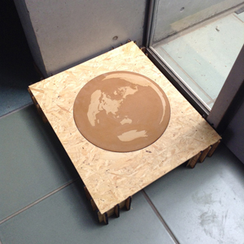
ようこそ 歡迎 Welcome Bienvanido Bemvindo Bienvenu Willkomen добро пожаловать ترحيب קבלת פן
1. Introduction
Maps are drawn in different methods and used in different purposes. For example, Japanese considers a nomal map as this one. Universe Transeverse Mercator Projection with horizontal pixel being fit to Japan.
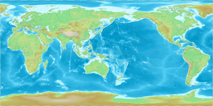
European and North American use this map. Mercator Projection.
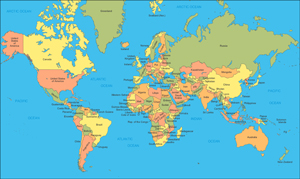
In Mercosur Countries (Argentine, Brasil, Paraguay, Urguay and Venezuela) upside-down-map (for the north hemisphere dwellers) is sometimes in use. South American nations sometimes use this map because of political issue in order to protest the selfish north hemisphere nations. Hence, map is created not only for the place but also for the specific purpose.
When I went to Wellington to attend Fab8NZ, there was a great exhibition of a mercator projection map. This is a picture of it.
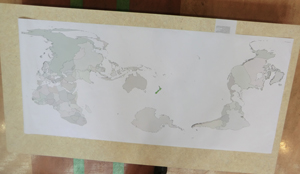
The center of the mercator projection was fit to Wellington to signify the participants are coming from all over the world. But since this map was different from the azimuthal equidistant projection, the participants cannot know the distance from Wellington.

The great example of azimuthal equidistant projection is the logo of United Nation. Instead of not drawing Antactica, all continents were drawn in this map. So, my idea is to make a big map based on azimuthal equidistant projection with being the coordination fit to Yokohama to share the all participants' experience of Fab9JPN [1].
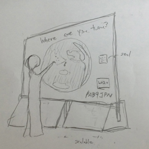
2. Methods
2.1 Making the azimuthal equidistant projection map
To make azimuthal equidistant projection maps, several GIS tools can be available. But these application were costly. Hence I had to find out a new application. As a result I run into The Generic Mapping Tools [2], which requires netCDF [3]. This application could make the azumuthal equidistant projection map according to this web site [4].
$ pscoast -Je0/90/1:250000000 -R0/360/-90/90 -Ggray -Ba30g10 > map.eps
The center of this map was the North Pole. Since Artactica is oppisite side of North Pole, Antactica was located the circumference of this circle. So, I modified the script to fit the coordination of Yokohama.
$ pscoast -Je139.65/35.5/1:250000000 -R0/360/-90/90 -Ggray -Ba30g10 > map.eps
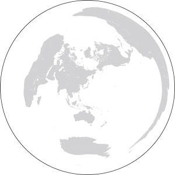
From this picture, we could see Asia, Australia, Africa, Europe, North America. But, South America was hard to be recognized. I must consider Mercator Projection or azimuthal equidistant projection.
2.2 Design of the map board
Since there is no Shopbot here in Japan, we had to use Rockler, which can cut 600[mm] x 700[mm] material. Based on the size restriction, the size of the board itself was determined. Also, leg locations of the map board were calculated based on the architectural structural engineering: the center of the legs is 150[mm] away from the edge. Also, I found communcation style of FabLab is "horizontal", not "vertical." Horizontal board is of course quite good for education. But, not for communication. So, I re-designed the map board.
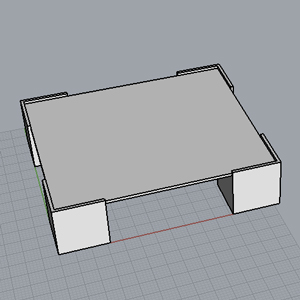
something like this:
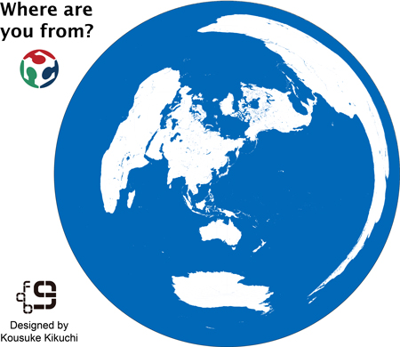
The picture above illustrated the milling area. Without white area, I tried to mill 2.5[mm] from the surface of polywood and paint this board.
3. Milling and Cutting Polywood
I bought a 900[mm] x 1800[mm] polywood and had cut the polywood 3 pieces of 600[mm] x 700[mm] at Keiyo D2. One board for the top table and the other two boards for the four legs. A working process was following clause: 1. engrave the map, 2: cut the legs, 3. paint the map, 4 assembly.
3.1 Problems
At milling the board, Rockler's oepration realm was two problem. One of the problem was the operation area. Since it was merely limited to 500 x 500 [mm], Rockler could not engrave the earth properly. Also, The smallest endmill of Rockler was 5.5 [mm]. So the it would not engrave the board properly. Finally, most concerning for me was Hirose. Since he would have a job interview March 26, he should be prioritized. After the few minutes of discussion between Kanasaki, a master student at SFC*SFC, I altered the machine. For making legs and the map, I would use Epilog Laser Cutter, and for milling the circle, Rockler was used.
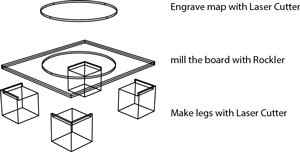
3.2 Making legs
I cut two 600 x 700 [mm] polywoods into four 600 x 350 [mm] with a circular saw found in SFC *SFC. After the cut downs, I made 4 legs.
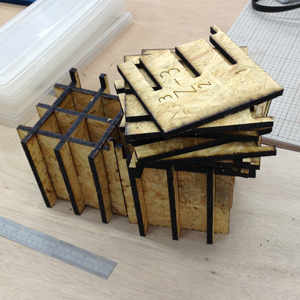
But the problem is the speed of cutting. Normally, thin object can be cut within few minutes. On the other hand this 9 [mm] polywood required 50 minutes for cutting. (Power: 100%, Speed: 5%) In summary, laser cutter should be used for thin material.
3.3 Engraving the Map
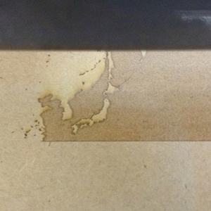
日本へようこそ。Welcome to Yokohama, Japan. Bienvenido a Yokohama, Japón, especialmente Desde Japón sobre Fab9 para Barcelona, España Fab10.
Laser Cutter scripted as big as possible.
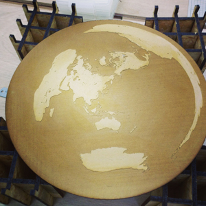
3.4 Milling the board
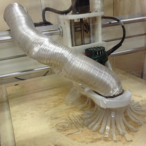
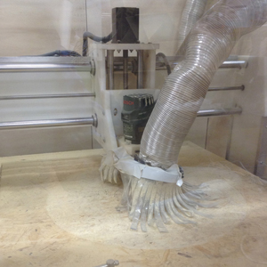
But, there might be a gender tilt in this board. Also, I tried the revserse side, so thin area can be found a big horrow.
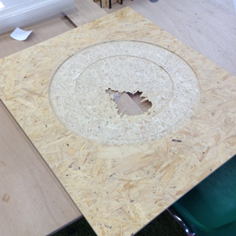
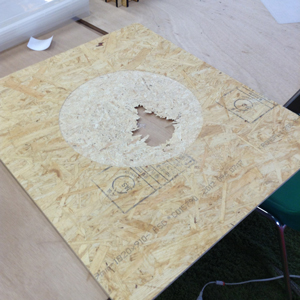
I found later CNC Router should not be availed for milling. One of the reasons is endmill. Since the endmill of this machine is relatively larger than Modela and this simple fact made scrupting with CNC quite difficult than other Laser Cutter.
4. Discussion
1. Laser Cutter: cut middle sized thin material without some reflective ones.
2. Modela: can engrave and cut tiny object but takes long time.
3. CNC Router: cut big material, not for engrave
References:
[1] FAB9 committee, Social Fabrication Lab Keio University SFC (n.d.): "the Ninth International FabLab Conference in Yokohama, Japan "Personal Fabrication as the new dawn of renaissance"" retrieved from http://fab9jp.com at March 23, 2013
[2] Paul Wessel, University of Hawaii (January 1, 2013) "The GMT Homepage" retrieved from http://www.soest.hawaii.edu/gmt/ at March 23, 2013
[3] Unidata, UCAR (n.d.) "Unidata | NetCDF" from http://www.unidata.ucar.edu/software/netcdf/ at March 23, 2013
[4] KDO (April 1, 2011) "いちからはじめる GMT その42 -Je（正距方位図法）" retrieved from http://homepage1.nifty.com/~kdo/gmt42_je.html at March 23, 2013